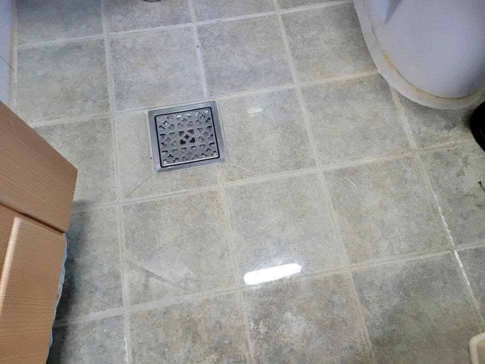
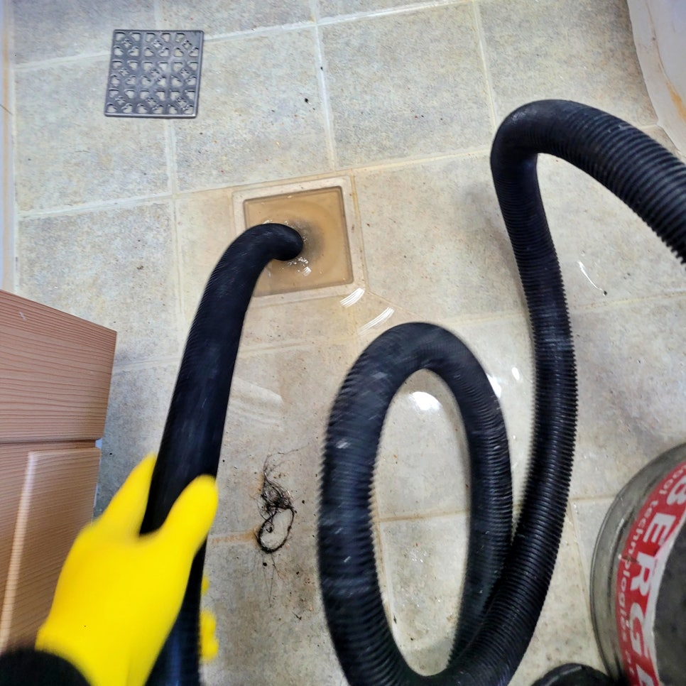
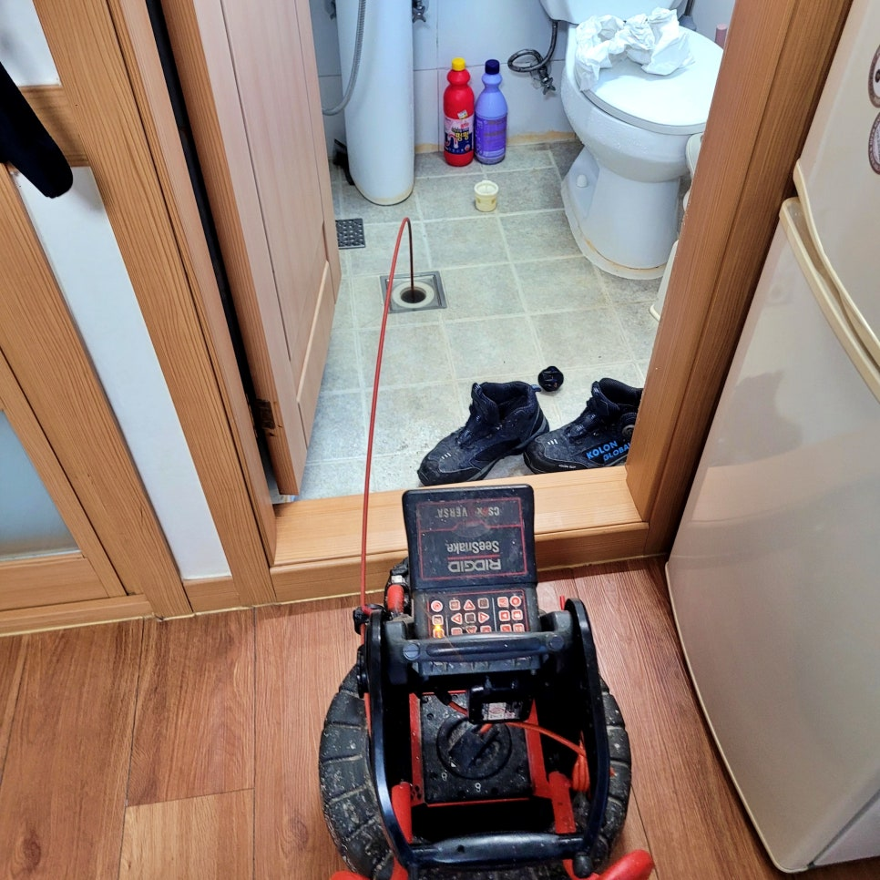
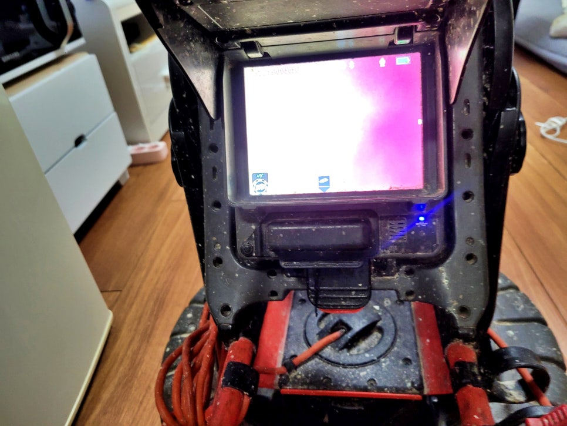
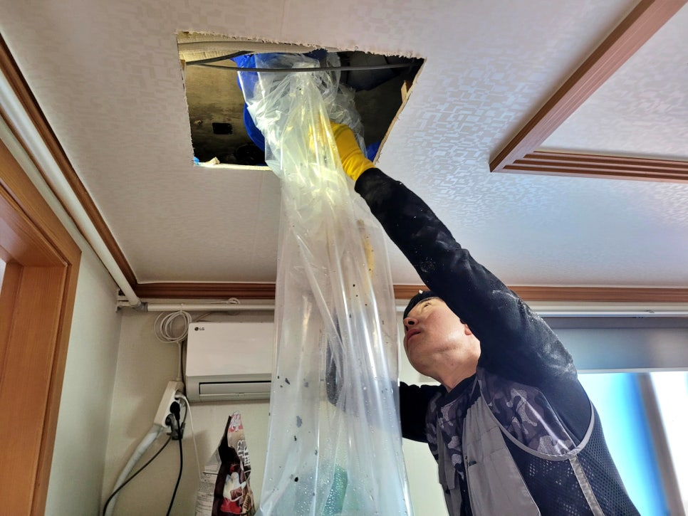
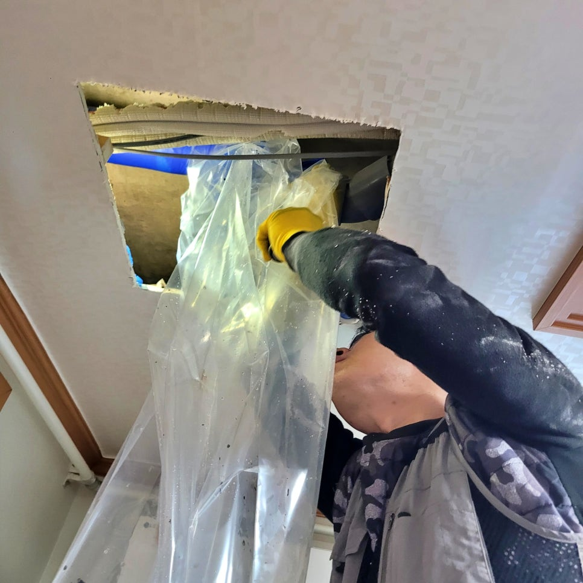

🏠 화성 병점동 욕실 하수구역류, 바닥 배수구에서 물이 올라오는 이유
화성 병점 하수구막힘 전문 시공 후기

📋 작업 개요
- 위치: 화성 병점, 병점, 화성
- 서비스 유형: 하수구막힘, 배관막힘, 역류해결, 뚫는업체, 배관청소
- 작업 일시: 2026. 2. 5. 16:45
- 업체명: 하수구수사대 (010-5615-2118)
🔍 문제 상황
화성시 병점동 욕실 하수구역류,
바닥 배수구에서 물이 자꾸
올라오는 원인 확실히 해결함.
안녕하세요?
화성시 병점동 욕실 하수구막힘 역류
배관청소전문 하수구수사대입니다.
오늘 저희가 다녀온 현장 후기는
화성 병점동의 한 빌라 4층에서
욕실 바닥 하수구역류가 발생해
긴급히 출동한 실제 사례입니다.
병점동 욕실 하수구역류가 발생한 현장
이번 병점동 욕실 하수구역류 현장이
특이했던 점은 세내 내에서 물을 전혀
사용하지 않았는데도. 위 화면과 같이
반복해서 물이 자꾸 역류하는 문제가
발생하는 상황이었죠.
그럼 왜 이러한 문제가 반복해서
발생했는지 그 원인과 해결 과정을
자세히 소개하겠습니다.
오늘의 포스팅 index
1. 병점동 욕실 하수구역류 반복 원인은?
2. 아래층 천장 P 트랩 배관 청소 작업
3. 오늘의 현장 후기를 마치며
석션 장비로 오수를 제거하는 모습

🔎 원인 분석
💡 전문가 진단: 화성시 병점동 욕실 하수구역류,바닥 배수구에서 물이 자꾸올라오는 원인 확실히 해결함.
현장에 도착해 보니 욕실 바닥이
역류한 오수로 가득 차 있어 발을
디디기 어려울 정도여서 긴급히
석션 장비를 투입해 바닥에 고인
물과 하수구 내부의 이물질들을
빠르게 제거했는데요.
이후 내시경 카메라로 배관 내부를
확인해 보니 최종 출수구까지 기름
때로 가득 차 하수구역류가 반복해서
발생한 것이었습니다.
기름때로 가득 차 앞이 보이지 않는 모습
게다가
P 트랩이 중간에 설치되어 있어서
일반적인 샤프트 장비 사용이 불가한
구조였는데요.
아래층 거실 천장에 설치된 P 트랩
이번 화성 병점동 욕실 하수구역류
현장의 가장 큰 문제는 P 트랩이
설치된 장소가 화장실이 아닌 바로
거실 천장이라는 것입니다.
비닐 보양 통로 설치 장면
아래층 주인분께 상황을 충분히
설명을 드리고 양해를 구했고요.
위 화면과 같이 천장을 최소한으로
🔧 작업 과정
타공하고 비닐 보양 통로를 꼼꼼히
설치해 청소 작업을 준비했습니다.
비록 병점동 욕실 하수구역류 작업
공간이 매우 협소했지만 아래층 공간
피해를 최소화하기 위해 보양 작업을
튼튼하고 꼼꼼히 진행하며 신경 써
P 트랩을 분리했는데요.
기름때로 가득 찬 배관 내부 모습
P 트랩 안을 확인해 보니 화면과 같이
기름때로 완전히 막혀 있었으며,
신속히 샤프트 장비를 이용해 아주
꼼꼼하게 기름을 제거했습니다.
샤프트 작업이 진행되면서 바닥에
준비된 오수 통으로 많은 기름들이
쏟아져 내렸는데요. 주변에 오수가
튀지 않도록 바닥 보양까지 신경 써
아래층 주인분께서도 매우 흡족해
하셨습니다.
병점동 하수구역류 배관 청소를
마친 후 내시경 카메라로 내부를
다시 확인한 결과 막힌 구간이
완전히 뚫리고 내벽에 남아 있던
기름까지 깨끗하게 청소된 것을
고객님께 확인시켜 드렸고요.
마지막으로
천장에는 깔끔한 점검구를 설치해
드리고 위층에서 여러 차례 배수
테스트를 진행한 결과 역류 없이
시원하게 배수되는 것을 확인한 뒤
현장을 마무리했습니다.
깔끔하게 점검구를 설치 완료한 모습
오늘 소개한
화성 병점동 욕실 하수구역류가 반복된
이유는 P 트랩이 설치된 배관이 기름으로
막혀서 발생한 것이고요.
화성 병점 배관청소 전문 업체인 저희
하수구수사대가 신속하게 아래층에
점검구를 만들어 막힌 구간을 뚫고


✅ 작업 완료
내벽까지 깨끗하게 청소해 드렸답니다.
지금 혹시
이번 현장처럼 막힘이나 역류가 반복해
발생하고 있다면 주저 마시고 전문가인
하수구수사대를 불러 주십시오.
지금까지
"화성 병점동 욕실 하수구역류, 바닥
배수구에서 물이 자꾸 올라오는 이유"
포스팅을 정독해 주셔서 감사합니다.
#화성병점동하수구역류 #화성병점동욕실하수구막힘 #화성병점동하수구막힘역류 #병점동욕실바닥역류 #병점동욕실배수구역류전문 #화성배관청소업체추천 #병점동배관막힘청소업체




⚠️ 하수구 배관 막힘 예방 및 관리 가이드
- ✅ 머리카락, 비닐, 물티슈 등 물에 분해되지 않는 이물질은 하수구 유입을 절대 금지해 주세요.
- ✅ 하수구 거름망을 씌우고 모여진 이물질은 주기적으로 쓰레기통에 바로 비워주셔야 합니다.
- ✅ 배관 노후가 심할 경우 이물질이 더 쉽게 걸리므로 주기적인 배관 세척(고압세척 등)을 권장합니다.
- ✅ 작업 후 1년 이내 재발 시 하수구수사대에서 무상 A/S 보증 서비스를 제공합니다.
💡 핵심 정리
- 확실한 장비 작업(내시경 점검 및 샤프트 스케일링)으로 원인을 뿌리 뽑습니다.
- 작업 후 1년 이내에 동일한 부위 재발 시 100% 무상 A/S 서비스를 보장합니다.
- 서울 · 경기 · 인천 전 지역에 24시간 언제든 긴급 출동할 수 있도록 항시 대기 중입니다.
❓ 자주 묻는 질문 (FAQ)
🚨 화성 병점 하수구막힘 문제로 고민이신가요?
정확한 원인 진단과 확실한 시공으로 재발 없는 해결을 약속드립니다.
24시간 긴급 출동 | 서울 · 경기 · 인천 전지역 | 1년 내 재발 시 무상 A/S